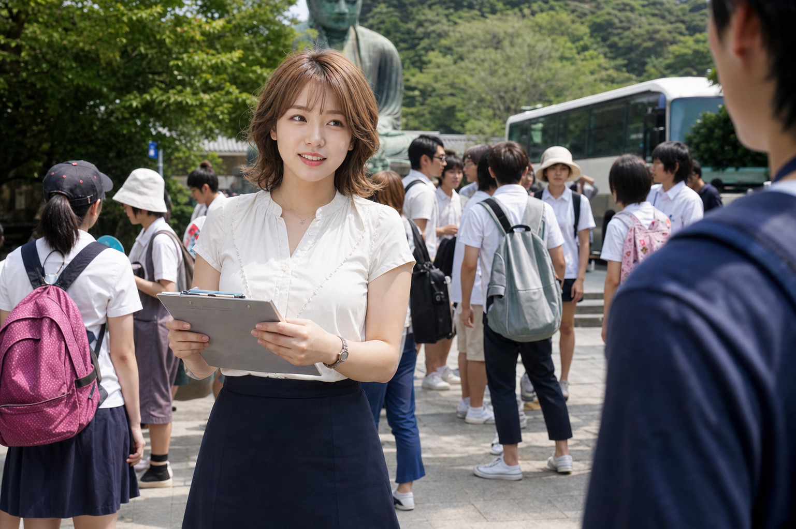

071. 인솔자와 학생
금요일 아침, 학원 앞 주차장에 대형 버스 세 대가 나란히 서 있었다.
전날 저녁부터 유즈키의 원룸에서 잠들었던 용식은, 알람 소리에 놀라 서둘러 자기 방으로 돌아가 견학용 가방을 챙겼다. 카메라와 물통, 도시락값으로 받은 소액의 용돈까지 챙기고 나니 시간이 빠듯했다. 뛰다시피 학원 앞에 도착했을 때, 이미 다른 학생들은 절반 넘게 버스에 올라 있었다.
여름 문화 체험이라는 이름으로 학생 전원이 가마쿠라로 당일 견학을 떠나는 날이었다. 반별로 버스가 나뉘었고, 각 버스마다 생활 지원실 스태프 한두 명이 인솔자로 동행했다. 명단을 확인하던 용식은 자기 버스 인솔자 칸에서 낯익은 이름을 발견했다.
나카타 유즈키.
버스에 오르자 그녀가 맨 앞줄에서 명단을 손에 들고 서 있었다. 눈이 마주치자 짧게 웃었지만, 표정은 평소보다 훨씬 사무적이었다.
그녀는 학생들 이름을 하나씩 부르며 체크했다. 용식의 차례가 오자 그를 잠깐 봤지만, 다른 학생들과 다를 바 없는 눈빛으로 지나갔다. 용식은 그 철저함이 낯설면서도 묘하게 마음에 들었다.
가마쿠라에 도착하자 학생들은 큰 불상 앞에서 자유 시간을 받았다. 유즈키는 다른 스태프와 함께 인원을 나눠 관리했고, 용식이 속한 조는 자연스럽게 그녀가 맡게 됐다.
학생들이 흩어진 뒤, 유즈키는 용식 쪽으로 다가와 나란히 걸었다. 대불 앞 계단을 오르는데, 그녀가 무심코 그의 소매 끝을 살짝 붙잡았다.
그 순간 저만치서 다른 스태프가 지나가다 흘낏 이쪽을 봤다. 유즈키는 잡았던 손을 바로 놓았다. 표정에는 티가 나지 않았지만, 용식은 그녀의 귀 끝이 살짝 붉어지는 걸 봤다.

[김용식] "네, 알아요."
용식은 짧게 웃었다. 유즈키도 뒤늦게 따라 웃었지만, 시선은 계속 주변을 살폈다.
대불 관람을 마친 뒤, 학생들은 근처 해변으로 이동해 도시락을 먹었다. 유즈키는 다른 스태프들과 함께 식사 감독을 했고, 용식은 같은 조 학생들과 모래사장에 자리를 잡았다. 멀리서 유즈키가 이쪽을 보는 시선이 몇 번 느껴졌다. 그는 일부러 시선을 피하며 도시락을 먹었다.
해변에 부는 바람이 짭짤한 소금기를 실어 왔다. 같은 조 학생 하나가 파도 사진을 찍겠다며 자리를 뜨자, 용식은 잠깐 혼자 남아 모래사장에 발자국을 내며 걸었다. 신발 안으로 모래가 들어오는 게 성가셨지만, 그마저도 오늘따라 나쁘지 않았다.
집합 시간이 다가올 무렵, 용식은 화장실에 다녀오던 길에 좁은 통로에서 유즈키와 마주쳤다. 주변에 아무도 없었다.
[김용식] "그러게요. 티 났어요?"
그녀는 그렇게 말하면서도 웃음을 참지 못했다. 긴장이 풀리자 오히려 장난기가 올라오는 눈치였다.
말투는 가벼웠지만, 그 말 안에는 지금까지 두 달 가까이 쌓아 온 비밀의 무게가 살짝 얹혀 있었다. 용식은 그 무게를 느끼면서도, 동시에 이상한 짜릿함을 느꼈다. 들킬 뻔한 순간을 넘긴 직후의 흥분이 아직 가시지 않은 채였다.
버스로 돌아가는 길, 유즈키는 다시 인솔자의 얼굴로 돌아가 학생들 인원을 세고 명단을 확인했다. 좌석 배치상 두 사람은 멀리 떨어져 앉아야 했다. 용식은 창가 자리에 앉아 창밖으로 멀어지는 대불의 실루엣을 바라봤다.
버스가 고속도로에 올라서고 얼마 지나지 않아, 폴더폰이 짧게 진동했다. 유즈키였다.
[김용식] "저도요."
용식은 그 문장을 몇 번이나 다시 읽었다. 두렵고 조심스러워야 할 상황이었는데, 유즈키는 그 안에서 오히려 즐거움을 찾아내고 있었다. 그 대담함이 걱정스러우면서도, 한편으로는 자신도 모르게 끌리는 부분이었다.
[김용식] "다음엔 좀 더 조심하자."
버스 창밖으로 해 질 녘 하늘이 붉게 물들고 있었다. 용식은 폰 화면을 오래 들여다보다가, 결국 답장 대신 웃음으로 넘겼다. 오늘 하루 그가 느낀 감정 중 가장 선명한 건, 위험을 넘긴 안도감이 아니라 그 위험을 함께 나눴다는 감각이었다.
기숙사에 도착해 헤어질 때, 유즈키는 다른 스태프들 앞에서 평소처럼 사무적으로 인사했다.
그 인사말 뒤에 숨은 표정을, 용식은 이제 정확히 읽을 수 있었다.
방으로 돌아와 씻고 나서도, 그는 침대에 누워 오늘 하루를 몇 번이나 되짚었다. 대불 앞 계단에서 붙잡혔던 소매 끝의 감촉, 좁은 통로에서 마주쳤던 순간의 웃음, 버스 안에서 주고받은 짧은 문자까지. 별것 아닌 하루였다면 이렇게 오래 곱씹지 않았을 것이다.
창밖으로 매미 울음소리가 늦은 밤까지 이어졌다. 용식은 폴더폰을 충전기에 꽂으며, 다음에 유즈키를 만나면 오늘 있었던 위험한 순간을 웃으며 이야기할 수 있을 거라는 생각에 옅게 웃었다.
불을 끄기 전, 그는 오늘 찍은 사진 몇 장을 다시 훑어봤다. 대불 앞에서 몰래 찍은 사진 한 장에, 유즈키가 명단을 든 채 이쪽을 살짝 곁눈질하는 모습이 담겨 있었다. 그는 그 사진을 지우지 않고 폴더 깊숙이 저장해 두었다. 언젠가 이 사진을 다시 보게 될 때, 오늘 하루가 어떤 의미로 남아 있을지 지금으로서는 짐작할 수 없었다.